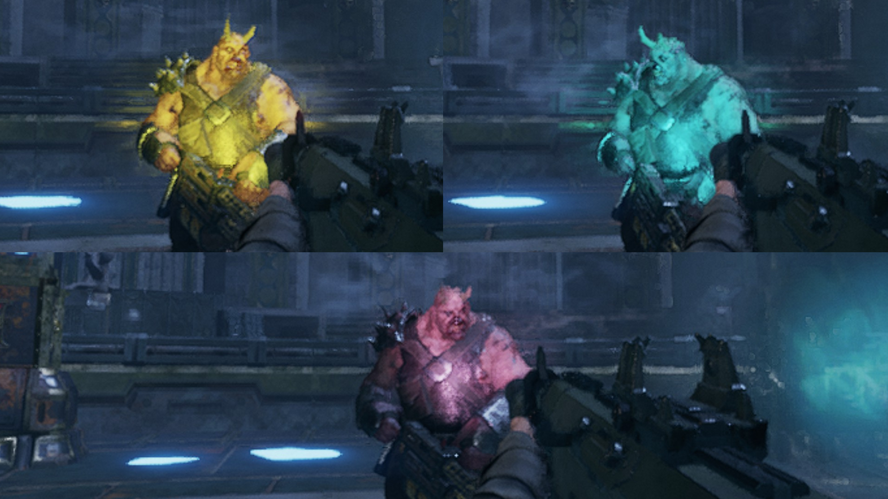
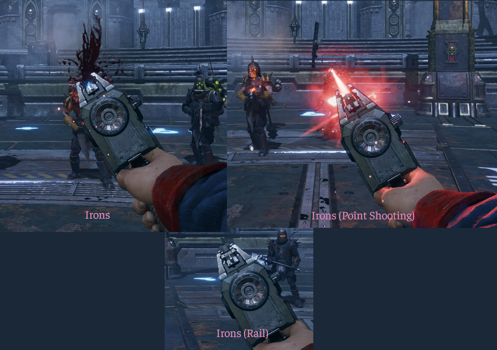
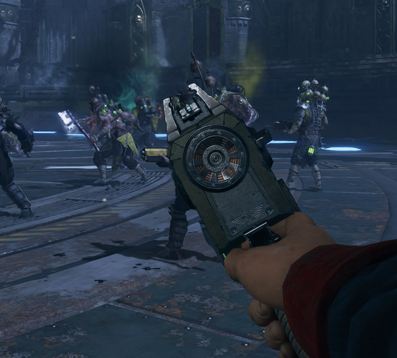
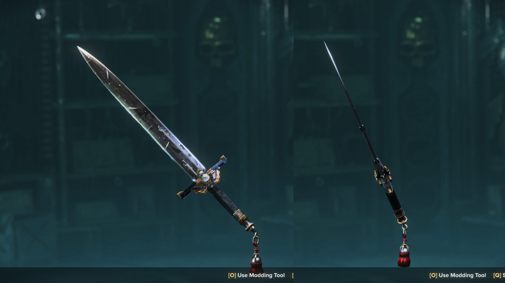

In the customization menu, parts will be in sections named Ostracized without Objection (OwO) or OwO - <some_name>
Part
Weapons: Weapons available
Description
Ranged
Special/Flashlight
All flashlights come with color and beam power variants. Each combination is its own category, which each of the following types of flashlight included.
Colors (10):
Green
Red
Blue
Magenta
Cyan
Yellow
Pink
Andy
Leyley
Custom - This is set in the Mod Options (Requires DMF v26.08.19+)
Beam Strengths (4):
Narrow
Narrow (Cool) - This reduces the color temperature, slightly shifting it
Weak
Default

Tip
There’s… a lot of these…
There are 4 * 10 = 40 combinations of Color and Beam Strength. So that’s how many categories thare are in the menu.
And then each category holds each flashlight model
That’s rough
Colored Default Flashlights
Weapons: All ranged weapons
Each model of flashlight (5) for each of the color and beam types, plus one model that’s supposed to be invisible
That means theres 40 beams * (5 + 1) models = 240 of these flashlights! Scrolling through the menu is horrible. I am not sorry.
Point Shooting: Not aligning the sights. Keeps the pistol a bit below the crosshair
Rail: Autoequips a rail.


Melee
Blade/Body
Slim Blades
Weapons: Power Swords, Power Falchions, Mechanicus Power Swords, Relic Blades, Blaze Force Swords, Blaze Force Greatsword, “Devil’s Claw” Sword, Heavy Sword, Dueling Sword
Comes in Flat and Slim, each with Grip variants
Flat: Blade’s cutting edge is slimmed down
Slim: Blade is less wide and its cutting edge is slimmed down
Grip Variant: Also shrinks the grip

Warning
Some of them are just flipped backwards. Despite a few months of effort, they aren’t cooperating. Therefore they are unholy (tbh it probably just means I need to remake them).